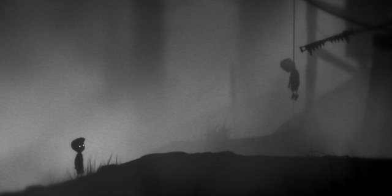
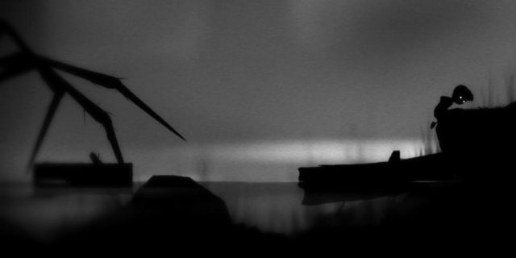
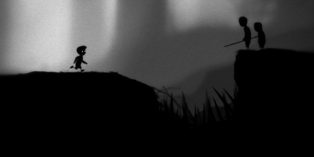

"State of Restraint, Confinement, or Exclusion"
2011-01-11 16:12:48
status: inherit
author: Bryan
A twisted guy named Augustine once wrote this, defining the concept of Limbo:
"Such infants as quit the body without being baptized will be involved in the mildest condemnation of all."
"If heaven is a state of supernatural happiness and union with God, and hell is understood as a state of torture and separation from God then, in this view, the Limbo of Infants, [is] technically part of hell (the outermost part, "limbo" meaning "outer edge" or "hem")"
EXPERIENCE VS. GAME

Playdead's Limbo was a fantastic experience; one of my favorites of the year. The use of "experience" here I mean to express a very specific direction taken by the developers: a player's experience of the game as a whole will likely be deeply tied to its aesthetic, rather than game mechanics per se. The challenges were based on a finely tuned physical simulation and very minor scripted AI, with little bits of intriguing details thrown in. It wasn't particularly memorable as a "game" per se, but regardless was notable for its nearly Portal or Braid-like cerebral challenges without incorporating necessarily mind-bending mechanics.
As a game as well as an experience, an easy connection to make would be to Chahi's early games - the quiet, the menace, the danger, the inevitability - as well as the replays, the replays, the replays. The replays.
BOOOOOOOM

The aesthetics - the sound, the visuals, the simplicity, and the feelings evoked - were fantastic. Especially the sound. I showed the game to teams at the office, and our sound designers immediately said - "Wait. We need to plug monitors in," and proceeded to gape at the sound design.
Most complaints I've seen directed at the game appear to be focused on its relatively short length. Perhaps its just my increasing unwillingness to get sucked into 50 hour plus games talking (writing), but I think this is not much of a criticism.
The only area I would criticize is that the arc of the game's thematic and level design culminated in an somewhat weaker conclusion than it could have been.
PEOPLE > NATURE > MECHANICAL

The level design was straightforward enough. It revolved around the placement of challenges using an element of danger as obstacle, pursuer, time limit, and so on. In terms of context, the danger proceeded from that of the natural world, to fellow humans, to man-made structures. The spider was terrifying, and an incredible start. Next began the human element of the danger - the discovery that you were not alone in this world, and that your peers were in fact trying to murder you - was incredibly memorable. Finally, only the mechanical; the man-made challenges of impartial buzzsaws, magnets, and electrified obstacles remained. This was by far the least affecting, yet most technically interesting gameplay.
There was some overlap of the context of natural world danger with that of human, and I would have liked to see some similar crossover in the third act with the mechanical with the murderous children of the second.
To me, there was something deeply disturbing in the Lord of the Flies-like cruelty and twisted society hinted at in the forts and tree houses of the children - a place where you were distinctly "the other," an invader. This occasionally subtle and oftentimes overt sense of danger and unrest offered by this situation was emblematic of the overall experience I took away from the narrative and atmosphere of the entire game.
The systematic, predictable, inevitable behavior of the mechanisms of the third act made the most sense for ramping up the gameplay challenge - but a combination of the human and the mechanical, the unpredictable and predictable, in some way may have made for a more compelling conclusion.
Limbo is about our fear of each other, the natural world, and the world we create. It personifies the abstract menace of dark fairy tales. They and Limbo both echo something of our barbaric infancy as a species; genetic memories we haven't quite escaped from.
Is this why we tell and listen to scary campfire stories as kids? There's something very primal about all of this.
Speaking of barbaric infancy, anything St. Augustine ever wrote or said needs to be put to rest.
DESIGN NOTES:
Don't underestimate the human element for drama.
The suggestion of danger can be just as powerful and driving as staring it in the face.
Common knowledge - almost everyone takes sound for granted in games, and if sound does its job, the player won't even realize it. Not exactly, I think - when its as good as this, especially paired with an atmosphere and sparse presentation, players sit up and take notice - or shrink fearfully away from the a suddenly thunderous wall of sound.
Comments: